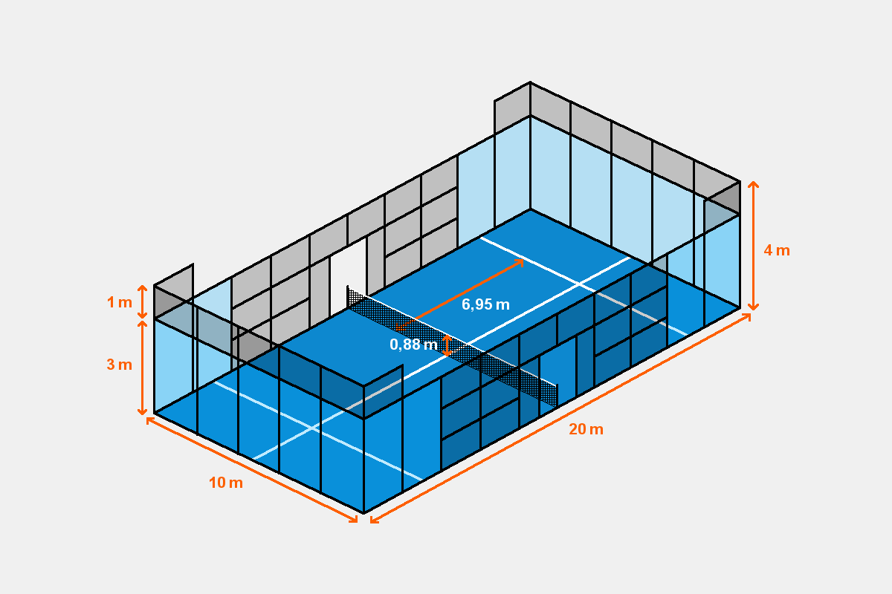
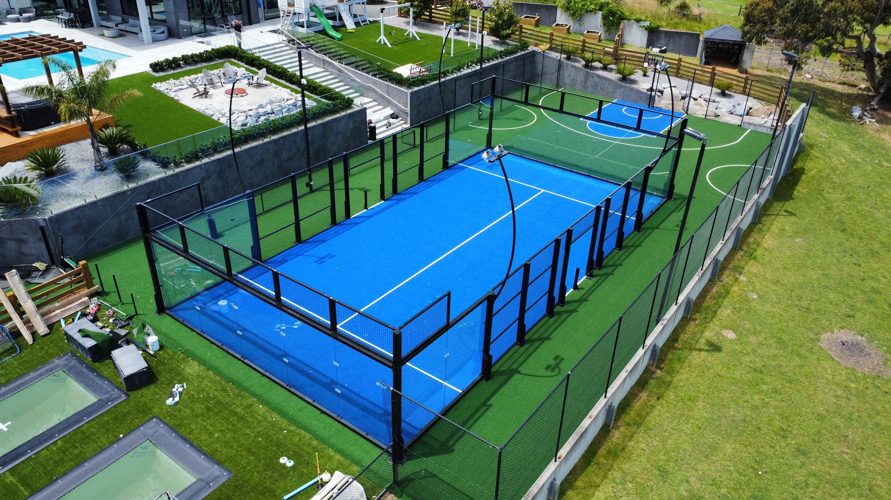
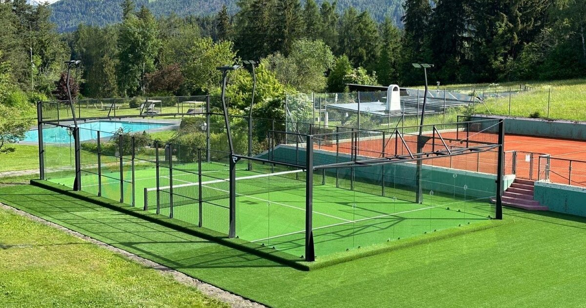
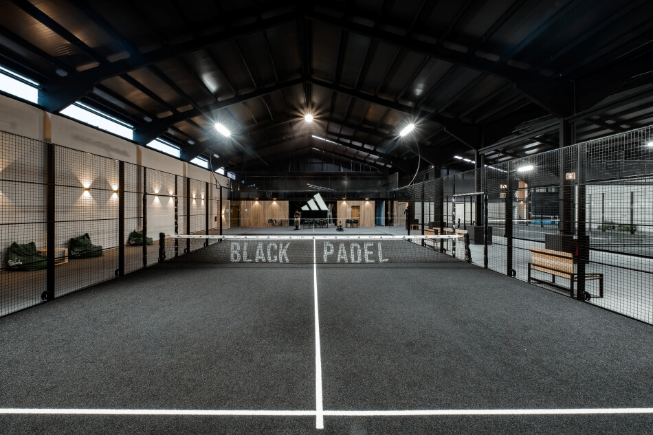
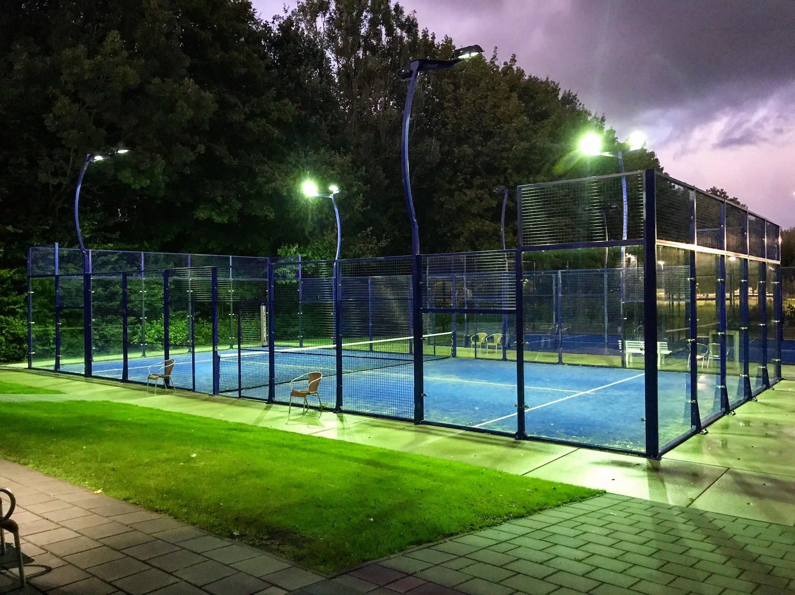

Padel‑kenttä on lajin ydin: suljettu, lasiseinillä rajattu pelialue, joka mahdollistaa padelin nopeatempoisen ja taktisen pelin. Kentän rakenne ja materiaalit on suunniteltu tuottamaan tasainen pomppu, miellyttävä pelituntuma ja turvallinen liikkuminen kaikentasoisille pelaajille.
Padel‑kentän viralliset mitat ovat 10 m leveys ja 20 m pituus. Lisäksi Keskellä kenttää kulkee verkko, joka jakaa kentän kahteen yhtä suureen osaan. Kenttä on aina suljettu, ja seinät ovat olennainen osa peliä.

Padel-kentän takaseinät valmistettu karkaistusta turvalasista, jotta se kestäisi pelaajan tai mailan iskeytymisen sitä vasten.
Padel-kentän sivuseinät ovat lasia ja metalliverkkoa, jotka tuovat "lisämausteen" peliin erilaisten kimmokkeiden takia.
Padel-kentän alusta on yleensä keinonurmea, joka tarjoaa hyvän pidon ja mukavan pelituntuman. Keinonurmi on suosittu valinta, koska se vaimentaa iskuja ja vähentää loukkaantumisriskiä.
Alustan alla on usein kerros hiekkaa tai kumirouhetta, joka auttaa tasoittamaan kentän pintaa ja parantamaan pallon pomppua. Tekonurmen väri on useimmiten sininen, vihreä tai harmaa.



Hyvä valaistus on tärkeä osa padel‑kenttää, erityisesti sisähalleissa ja iltakäytössä.
Valaistuksen tavoitteena on tasainen valonjako, häikäisemätön pelitila ja optimaalinen näkyvyys pallolle ja seinille. LED‑valaistus on nykyään yleisin ratkaisu energiatehokkuutensa ja valotehonsa ansiosta.

Hyvin suunniteltu ja rakennettu padel‑kenttä parantaa pelikokemusta, vähentää loukkaantumisriskiä, tarjoaa tasaisen ja reilun pelialustan sekä kestää kovaa käyttöä ja vaihtelevia olosuhteita